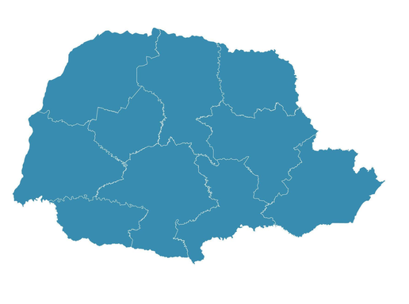

Programação 1° anos
A cidade
mais velha
Capital
Quais os povos
presentes
Maiores cidades
do paraná
Como era o Paraná no século XIX
Os povos italianos
no Paraná
Os povos Polonês
no Paraná
Os povos arabe
no Paraná
Os povos Ucrâniano
no Paraná
Os povos Alemão
no Paraná
Os povos
Japonês
no Paraná
Culinária Alemâ
Culinária Indiana
Cultura agricula
na decorrer dos
anos no Paraná
